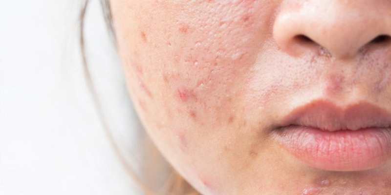

Системні ретиноїди: важливі застереження та рекомендації під час прийому
Системні ретиноїди: важливі застереження та рекомендації під час прийому
Системні ретиноїди, такі як ізотретиноїн ,є ефективними препаратами у лікуванні тяжких форм акне та інших дерматологічних захворювань.
Однак їх застосування вимагає дотримання ряду важливих застережень та рекомендацій, щоб забезпечити безпечність та ефективність терапії.
Чи знаєте ви, що людям, які приймають системні ретиноїди, забороняється бути донорами крові на період лікування та протягом 1 місяця після його завершення? Це пов'язано з потенційним ризиком потрапляння препарату до організму реципієнта, що може спричинити небажані реакції. Тому пацієнтам, які знаходяться на терапії системними ретиноїдами, слід утриматися від донорства крові до повного виведення препарату з організму.
Концентрація. Особливої уваги потребують люди, які працюють у нічні зміни, такі як водії, пілоти та військові. Для них рекомендується ретельно відстежувати вплив препарату на гостроту зору та концентрацію під час виконання професійних обов'язків. Системні ретиноїди можуть потенційно погіршувати ці важливі функції, тому пацієнтам необхідно бути особливо пильними та проконсультуватися з лікарем щодо можливих коригувальних заходів.
Важливо❗️ Під час лікування системними ретиноїдами необхідно виключити з раціону алкоголь, оскільки він чинить токсичний вплив на печінку та може посилювати побічні реакції. Також слід обмежити споживання продуктів, багатих на вітамін А, таких як печінка та морепродукти. Це пов'язано з тим, що системні ретиноїди та вітамін А мають подібний механізм дії, і їх надмірне надходження може призвести до гіпервітамінозу А, зі серйозними наслідками для здоров'я.
На період лікування системними ретиноїдами пацієнтам необхідно утриматися від будь-яких травматичних косметологічних процедур, таких як механічна чистка обличчя, воскова епіляція, шугаринг, лазерна чи електроепіляція, татуювання, татуаж, пірсинг тощо. Це пов'язано зі зниженою регенерацією шкіри та підвищеним ризиком пігментації та рубцювання. Також слід уникати використання будь-яких топічних засобів з активними речовинами, як адапален, третиноїн.
Щодо проведення ін'єкційних методик корекції вікових змін, таких як ботулінотерапія чи введення філерів, краще обговорювати з лікарем. Оскільки системні ретиноїди можуть впливати на загоювання ран та підвищувати чутливість шкіри, такі процедури мають бути ретельно зважені та сплановані з урахуванням всіх ризиків.
Загалом, під час лікування системними ретиноїдами пацієнтам необхідно бути особливо обережними та дотримуватися всіх рекомендацій лікаря. Це дозволить уникнути можливих ускладнень та забезпечити ефективність та безпечність терапії.